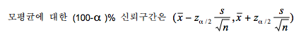
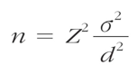

통계적 추정에는 점추정과 구간추정이 있다. 본 문서에서는 구간 추정만 논하겠다. 구간 추정이란 표본으로부터 미지의 모수가 속할것으로 예상되는 구간을 측정하는 방법이다.
표준화 변수로 확률을 구하는 공식에서 표본평균과 표본비율을 도출해낼 수 있다.
위 공식에서 s는 표본분산으로 모분산을 알 수 없으므로 대신 사용되었다. 그리고 현재 표준정규분포가 사용 되었지만 소표본이고 모분산을 알 수 없을 경우 에는 표준정규분포 대신 t분포를 사용하여야 한다.
모수 추정에서 표본의 크기는 매우 중요하다. 표본의 크기에 따라 정보의 질이 달라지는데 통계에선 오차한계를 만족시키는 표본의 크기가 필요하다. 모평균의 추정에서 표본의 크기를 추정할떄는 아래와 같은 공식을 사용한다.
이때 d는 오차의 한계, 오차률의 절반을 갖는 Z는 표준화변수, 시그마는 표준편차이다.